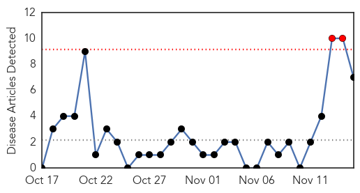
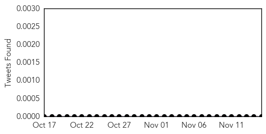
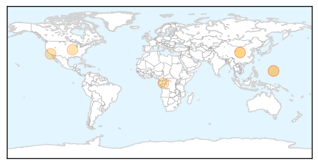
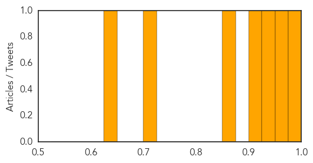

Toggle navigation
Early Warning
Daily Alerts
Measles
Nov 15, 2014
Compare to:
-
Dengue Fever
Hemmorhagic Fever
Mold/Fungal Infection
Influenza
Meningitis
Pertussis / Whooping Cough
Middle East Respiratory Syndrome
Cholera
Hepatitis
Chikungunya
Yellow Fever
Bubonic Plague
West Nile Virus
Swine Flu
Ebola
Unknown
Mumps
30 Day Trends
Web: 2
alerts
, 0
warnings
Twitter: 0
alerts
, 0
warnings
Top Articles:
0.990
Guam health officials warn of measles risk in travelers to Hawaii
0.956
A Disease We Thought Was History Is Making An Alarming Comeback
0.927
Report: Most US Measles Outbreaks This Year Since 1994
0.924
Reports show 2015 targets for eradication of measles will not meet as progress twoards it stalled
0.860
WHO cautions stalled progress in measles elimination
0.715
Progress in eliminating measles stalled
0.642
Pacific Daily News
Top Tweets:
No tweets found for Nov 15, 2014
Web/News Articles

Tweets

Article Locations

Article Confidences
